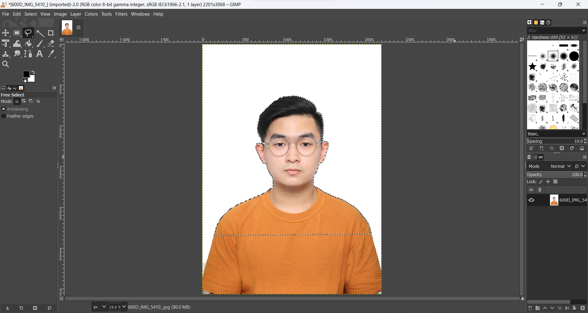
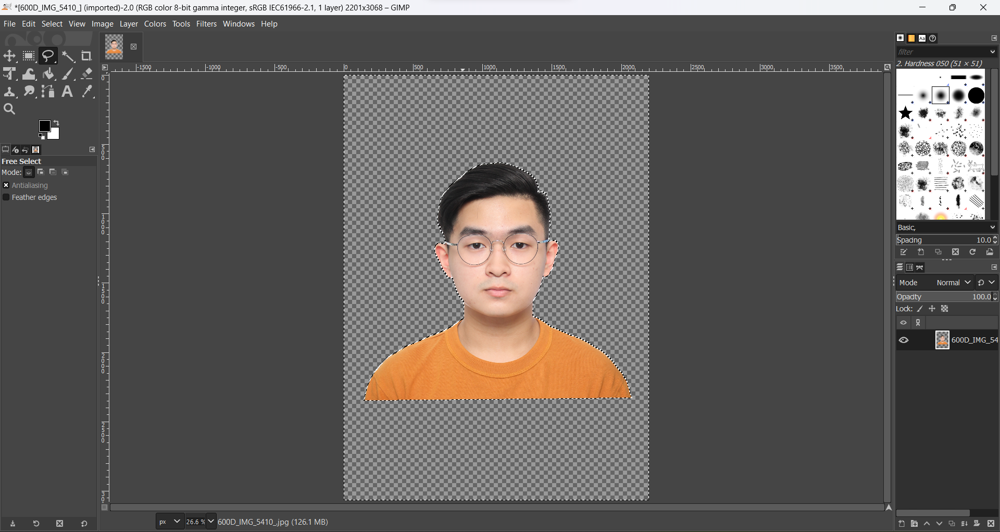
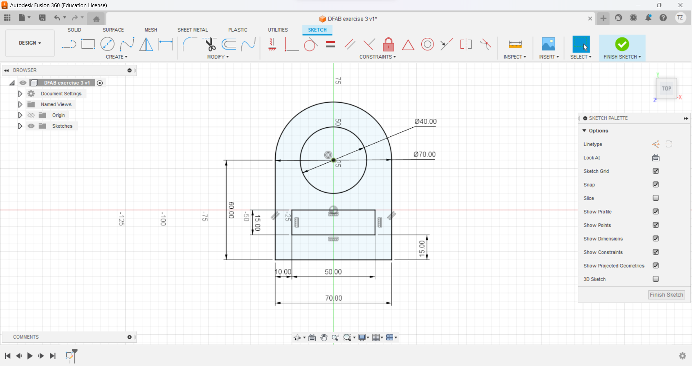
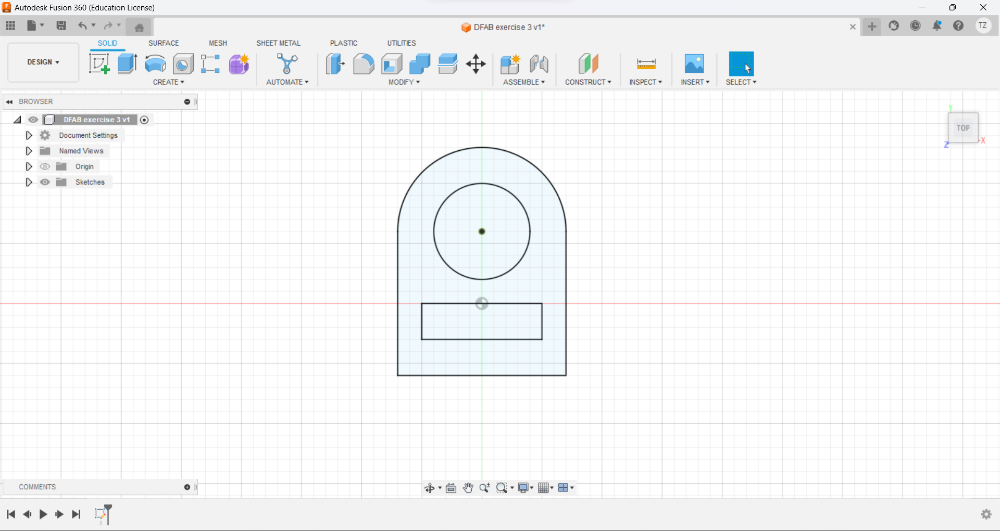

Starting off the module on the second week of school, I learnt how to create a GITHUB account and also learnt how to code on HTML and CSS

In this exercise, I learnt how to remove the background of an image and substitute with a scene or keep it transparent.


In this exercise, I learnt how to create and design a logo shown on the top of this website.
In this exercise, I learnt how to sketch a simple design with FUSION 360
 In this exercise, I learnt how to sketch and extrude a design of a wrench with FUSION 360
In this exercise, I learnt how to make Lego Brick with FUSION 360
In this exercise, I learnt how to make a Name Tag with my name using the TEXT function with FUSION 360
In this exercise, I learnt how to make a Block Pyramid with FUSION 360
In this exercise, I learnt how to make a Mug with FUSION 360
In this exercise, I learnt how to make keychain for laser cutting with FUSION 360
In this exercise, I learnt how to make a customised Laptop Stand with FUSION 360
In this exercise, I learnt how to make an accessory box with FUSION 360 and cutting it out for assembly
In this exercise, I learnt how to make a horse chesspiece with FUSION 360
In this exercise, I learnt how print the horse chesspiece I created on ENDER V3 PRO 3D printer
In this exercise, I learnt how to make a Handphone Stand with FUSION 360 and 3D printing it out on ENDER V3 PRO
In this exercise, I learnt how to build a circuit that blinks an external LED in TINKERCAD
In this exercise, I learnt how to build a circuit using a 7 segment LED display in TINKERCAD
In this exercise, I learnt how to build a circuit using a 7 segment LED display countdown timer in TINKERCAD
In this exercise, I learnt how to build a LED counter using the serial monitor in TINKERCAD
In this exercise, I learnt how to build a circuit that blinks an external LED in TINKERCAD
In this exercise, I learnt how to build a circuit using a 7 segment LED display in TINKERCAD
In this exercise, I learnt how to build a circuit using a 7 segment LED display countdown timer in TINKERCAD
In this exercise, I learnt how to build a LED counter using the serial monitor in TINKERCAD
In this exercise, I generated 3 ideas on post it notes which I find possible to use as my final project
In this exercise, I used one of the ideas generated and improved on it, finalising the product I want to make
In this exercise, I connected a LED with a current limiting resistor (220 ohm) to port 6 of the Arduino Uno board.
I then wrote a program to blink the LED in a variety of patterns, i.e. Blink 1 time, delay(Milliseconds) then Blink 2 time etc.
In this exercise, using the same technique, I connected 3 LEDs of different colours to the Arduino board using pins 6, 7, and 8.
I then wrote a program to produce running lights i.e. the LEDs are lit in sequence e.g. R -> G -> B -> R -> G -> B and so on.
In this exercise, I added a switch to the circuit in task 1.
I then wrote a program that when the switch is pressed, the LEDs will light up. Pressing the switch again will turn the LEDs off.
In this exercise, I used the switch in task 3 to control the type of light-up and flashing of the LEDs, for example:
Start with LEDs are all in the OFF state.
pressing the switch, turns on only the RED LED.
pressing the switch again, turns on only the GREEN LED
pressing the switch again, turns on only the BLUE LED
pressing the switch again, turns on all LEDs
pressing the switch again, turns off all LEDs returning to the first state.
In this exercise, I tried to program a Matrix Keypad for keying information.
i.e taking reference from a typical matrix keypad image, try to program the buttons to tell the alphabet/figure in the serial monitor.
In this exercise, I tried to program a LDR photoresistor to Turn an LED on/off when it detects a certain threshold value.
i.e if the detected value is >200, LED is HIGH thus it will light up, vice versal, if the value is less than 200, LED will be LOW hence, it will not light up.
In this exercise, I tried to program an Ultrasonic Sensor to detect presence
i.e if the detected someone within a certain distance, it will trigger an alarm/response, otherwise, it will be on default mode.
In this exercise, I tried to program a PIR Motion Sensor to detect movement.
i.e if detected motion, it will add a count in the serial monitor.
In this exercise, I tried to program an Temperature Sensor to detect weather condition
i.e it can detect temperature and light up the LEDs base on the temperature and show in the serial monitor.
(use a Temperature sensor in tinkercad in the library since there is no DHT sensor)
In this exercise, I tried to program an Potentiometer to adjust LED Brightness.
i.e if the detected value is <1024, It will be LOW thus, the LED will not light up, vice versa if the value is >1023, then it will be HIGH hence the LED will light up.
In this exercise, I tried to program a LED to flash different colours
i.e programming the LED to flash a rainbow colour sequence.
In this exercise, I tried to program Neopixels to flash different colours
i.e try to link up with multiple neopixels and program it to run flash different colours.
In this exercise, I tried to program a DC motor to turn with a potentiometer
i.e Connect the DC motor with a transistor to act as a tap to control the electric signals and with a potentiometer to adjust the speed of the RPM. Read the values in the serial monitor.
In this exercise, I tried to program a servo motor to rotate in a positional motion.
i.e Connect the servo motor and program it to rotate a certain angle/degree. The angle/degree will be stated in the serial monitor.
In this exercise, I tried to program a servo motor to rotate continuously.
i.e Connect the servo motor and program it to turn clockwise/ anti-clockwise, with speed variation and will be stated in the serial monitor.
In this exercise, I tried Try to program LCD display to show output.
i.e try to set the LCD address to 0x3F, 16 characters.
In this exercise, I tried to program with a speaker.
i.e link up the speaker to the board and play a sound/alarm.
(used a piezo instead of a speaker in tinkercad)